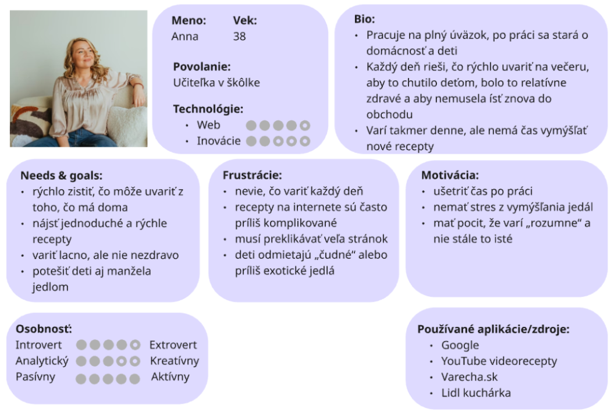
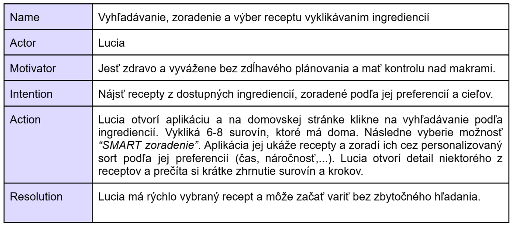
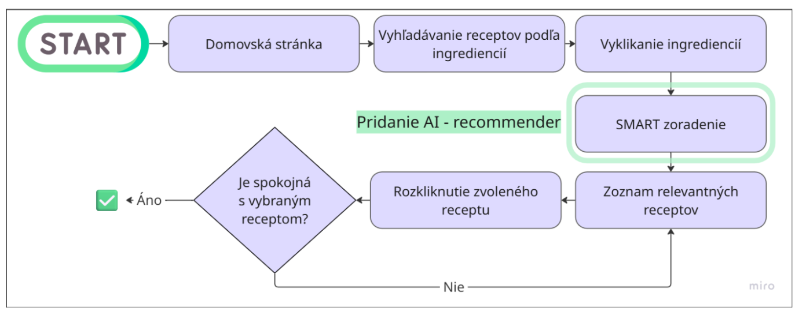
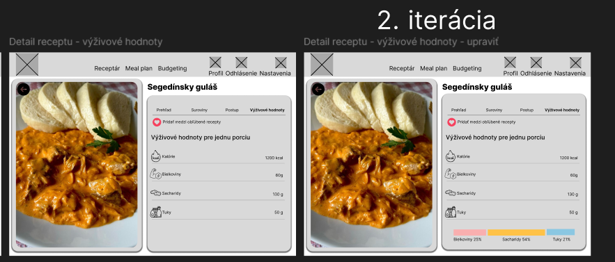
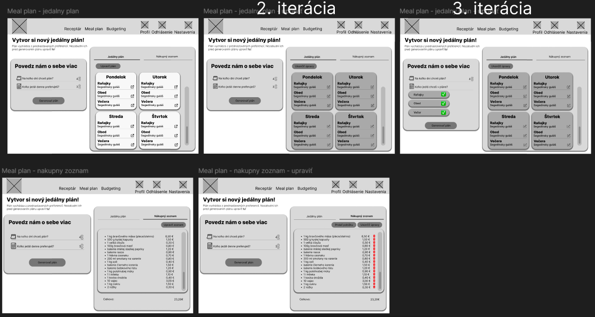
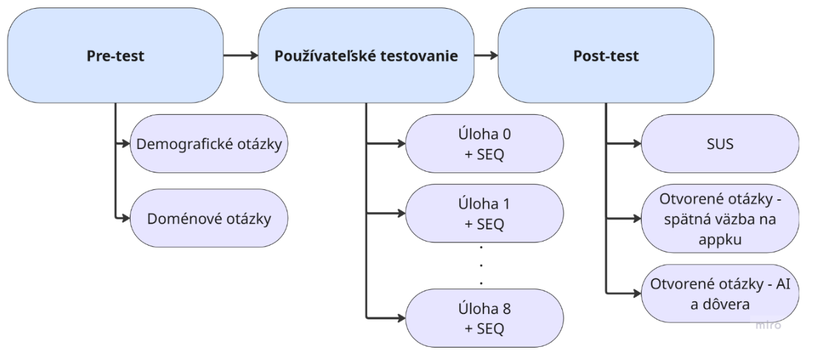

🍳 PAPKAI - Smart cooking assistant

✨ ABOUT PROJECT
This project was developed as part of the PMNIS (Advanced Methods of Interactive System Design) course during my Master's studies at FIIT STU. I worked on the project as a pair with my classmate Lenka ♡.
The goal of the project was to design and evaluate an application whose core features are powered by AI. Our solution, called PAPKAI, focuses on simplifying everyday decision-making around cooking. It helps users save time and reduce frustration when planning meals or searching for recipes.
The application combines several intelligent features, including a personalized recipe recommender, ingredient recognition from images, and automated meal plan generation.
✨ WHAT WE DID
I worked on the project from early research to final testing, contributing to both the design process and iterative prototyping.
- 1. User research
We conducted a study with 31 respondents to identify key user needs and pain points related to cooking and meal planning. - 2. Personas
We created user personas to better represent different target groups and guide design decisions.
- 3. User scenarios, User flows
We designed realistic usage scenarios to explore how users would interact with the application in everyday situations.

- 4. Prototyping & Iteration
We started with low-fidelity prototypes and mockups (paper, Figma), and gradually moved to a high-fidelity solution. The final prototype was implemented in code using a small dataset of recipes, as traditional design tools (e.g. Figma, Axure RP...) were not sufficient for testing AI-driven functionality. During this phase, we also focused on trust calibration, inboarding flows, and overall user experience refinement.

- 5. Usability Testing
We conducted usability testing using the closed Wizard of Oz method. To be precise, we created a total of five versions of the app for this purpose (each on a different branch on GitHub). Each one contained a simulated error in one of the AI features (e.g., a vegan user was offered recipes with meat, the same meal over and over again in the meal plan...). We expected users to notice this error, and we wanted to see how they would react if the "AI" in the background wasn’t working or was malfunctioning.
Usability testing was conducted in several steps, as shown in the figure below.We defined scenarios, measured key metrics, and evaluated user interactions to validate our design decisions. You can read the detailed usability testing report here.
✨ SHOWCASE
This video presents the main features of the prototype: SMART sorting, photo-based ingredient recognition, and meal plan generation.
✨ WHAT DID I LEARN?
This project gave me hands-on experience with designing AI-driven user experiences, especially in areas where traditional design tools fall short. I learned how to approach trust in AI systems, how to prototype beyond static interfaces, and how to validate complex interactions through user testing.
The most rewarding part for me was bridging the gap between UX design and functional implementation.